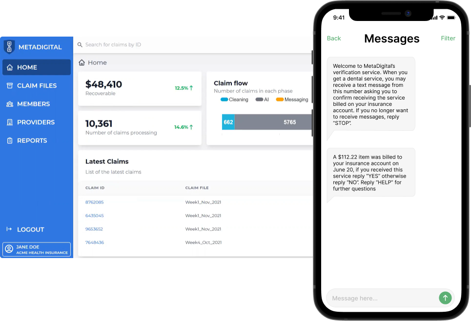

Payment integrity for the mobile age
Healthcare claims verification can be hard, messy and expensive. With MetaDigital, you can eliminate fraud, increase healthcare savings and improve member engagement.
Schedule a callMember driven verification
Unlike traditional solutions, fraudulent claims are denied by members providing a clear signal of fraud.

Pre-payment verification
Members can verify their participation as soon as the claim is received by the payer before payment is made. This improves their cashflow position and saves recovery costs.
Identity fraud focused
62% of healthcare fraud cases involve identity such as ghost billing and identity theft.1 Our member centered solution directly addresses this fraud saving up to 6.2% healthcare expenditure.
Complementary to your Fraud, Waste and Abuse solutions
Our solution is able to target lower value claims such as those in telehealth, outpatient and pharmacy settings.